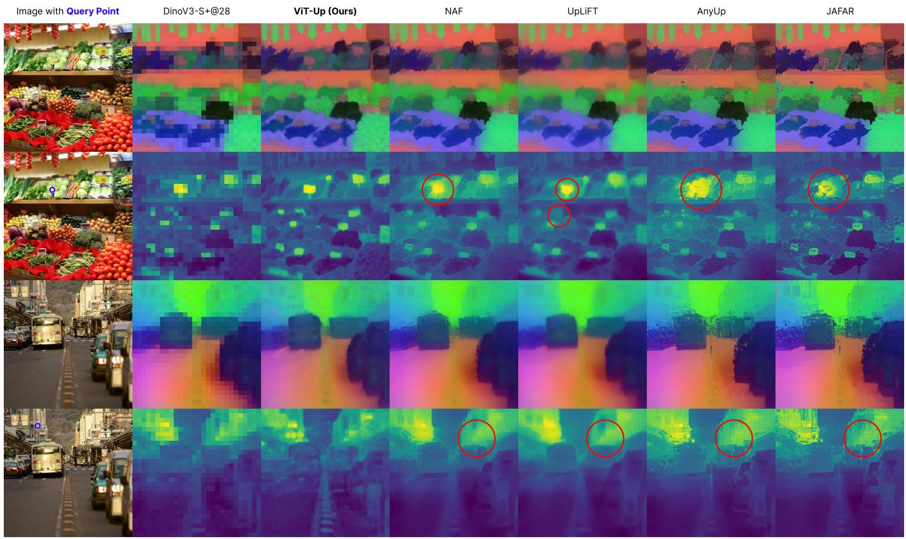

Figureure 7 · Upsampling versus artifact suppressionFig. 7. Upsampling versus artifact suppression. For each example, the top row shows DINOv2-based features and the bottom row shows DINOv3-based features under the same visualization protocol. DINOv2 exhibits stronger spatial leakage and position-dependent artifacts, while DINOv3 provides a cleaner dense feature field. Image-guided upsamplers can suppress such artifacts by injecting high-resolution image cues, whereas ViT-Up reconstructs the target ViT representation more directly. This explains the trade-off observed across backbones: artifact-prone features favor suppression-based behavior, while clean modern ViT features favor faithful reconstruction.这张可视化用来解释 ViT-Up 学到的中间表征或对齐关系。重点看它是否支持正文里的机制判断。

Figureure 3 · Qualitative comparison of feature upsampling methods on DINOv3-S+Fig. 3. Qualitative comparison of feature upsampling methods on DINOv3-S+. All methods use a 448×448 input image; the native backbone produces a 28×28 feature grid, and upsampled feature maps are shown at 448×448 output resolution. We show two examples: a vegetable-store scene in the top two rows and a traffic scene in the bottom two rows. For each example, the top row visualizes the feature structure using PCA, including the input image, the original $2 8 \times 2 8$ backbone feature map, and the upsampled feature maps produced by ViT-Up, NAF [14], UpLiFT [13], AnyUp [12], and JAFAR [8]. The bottom row shows the corresponding query-based similarity maps, including the input image with the query point encircled in blue, the similarity map obtained from the low-resolution backbone features, and the similarity maps obtained from the upsampled features of each method. ViT-Up produces coherent PCA structures and semantically selective similarity maps that remain aligned with the queried region. In contrast, NAF, AnyUp, and JAFAR can produce visually sharp but fragmented feature maps with leakage into nearby structures, while UpLiFT tends to produce smoother features and weaker similarity responses for small semantic regions.这张图/表用于判断 ViT-Up 的实验收益来自哪里。重点看替换、消融或跨模型设置下趋势是否一致，而不是只看单个最高分。